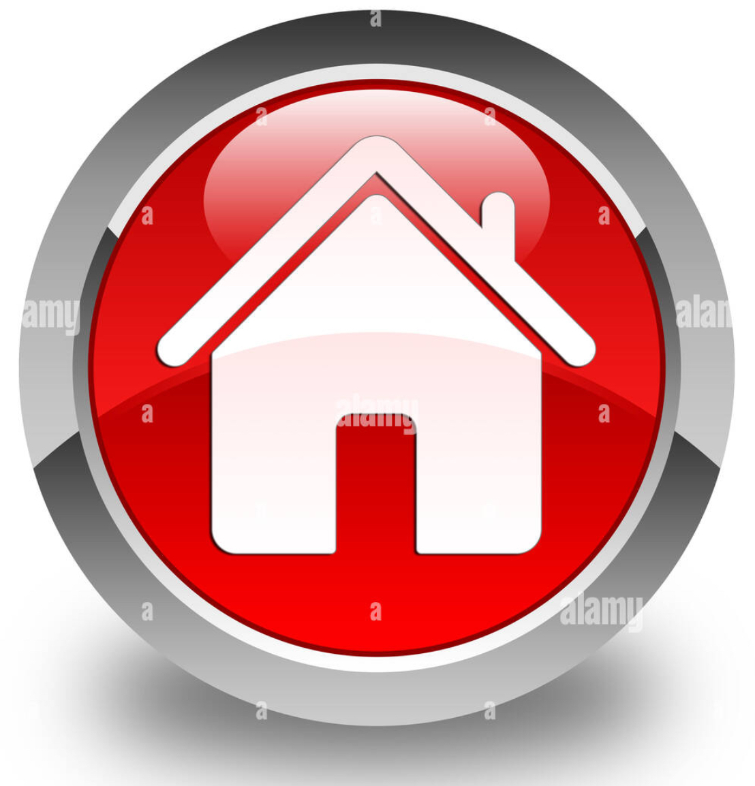

Home

Agenda 2030

La blockchain
Aritcolo 7
Articlo 13

Cloud computing

Server-farm
Supercomputer

RETE/NETWORK

Contrasti con il Target 7 (Accesso a Fonti di Energia Sostenibile):
•Dipendenza Continua dalle Fonti Fossili: La continua dipendenza dalle fonti di energia fossile contribuisce all'aumento delle emissioni di gas serra e ostacola il progresso verso fonti di energia sostenibile. Una soluzione sarebbe promuovere politiche che disincentivino l'uso delle fonti fossili, aggiungedo tasse sul carbonio o fornendo aiuti fiscali per l'adozione di energie rinnovabili.
•Bassa Efficienza Energetica in Alcuni Settori: Alcuni settori potrebbero avere bassi livelli di efficienza energetica, contribuendo agli sprechi e alle emissioni eccessive ; una solizione sarebbe implementare normative e incentivi per migliorare l'efficienza energetica nei settori industriali, dei trasporti e delle costruzioni.
Contrasti con il Target 13 (Azione sul Cambiamento Climatico):
•Emissioni Elevate in Settori Chiave: Alcuni settori potrebbero contribuire in modo significativo alle emissioni di gas serra senza adottare misure efficaci di riduzione; la soluzione sarebbe implementare politiche specifiche per la riduzione delle emissioni nei settori ad alta intensità di carbonio, incoraggiando l'uso di tecnologie pulite e pratiche sostenibili.